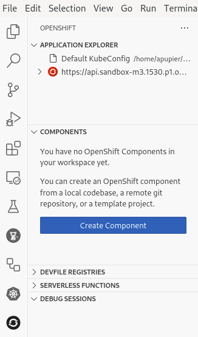
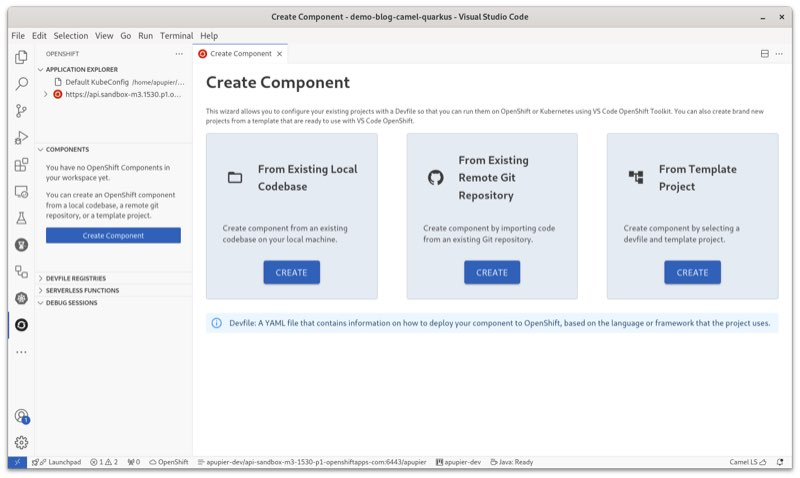
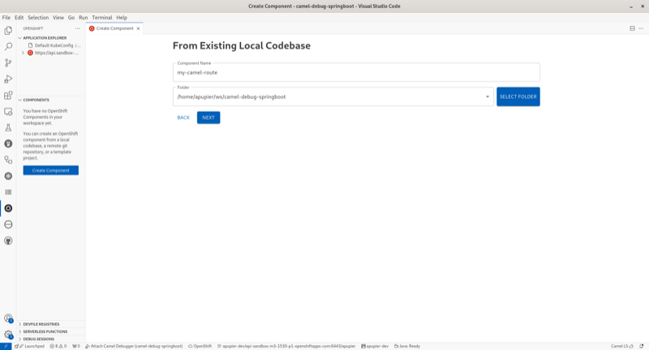
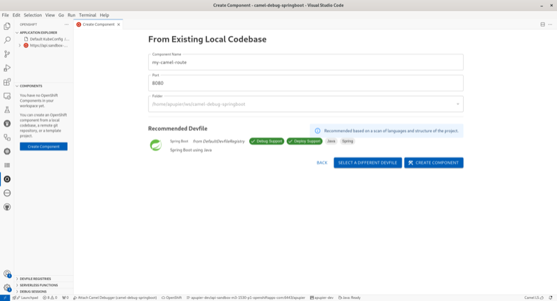
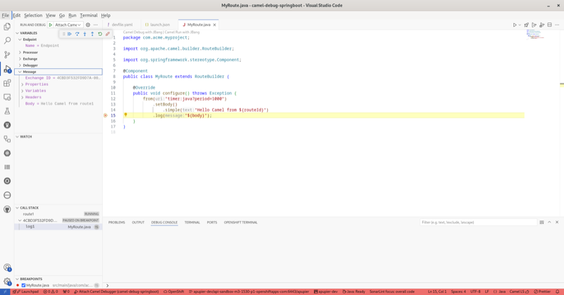

How to Camel Debug a Camel Spring Boot route deployed on OpenShift from VS Code
Requirements
This how-to will not cover in details the following points, it is assumed that it is installed/preconfigured:
- VS Code with the Extension Pack for Apache Camel with a folder opened
- Active connection to an OpenShift cluster
- JBang available on Command-Line Interface (CLI)
- Maven available on CLI
Note that this tutorial was made with the following versions:
- Camel 4.7.0
- VS Code Language support for Apache Camel 1.3.0
- VS Code Debug Adapter for Apache Camel 1.2.0
- VS Code OpenShift Toolkit connector 1.15.0
Create a Camel route
- Open command palette (
Ctrl+Shift+P) - Search for the command
Camel: Create a Camel Route using Java DSL - Provide a name, for instance
MyRoute - Recommendation: close the editor as the corresponding file is duplicated in next step to be moved to correct place for the project.
Create a Spring Boot project
- Open command palette (
Ctrl+Shift+P) - Search for the command
Camel: Create a Camel Spring Boot project - Default parameters can be used
You can notice the Camel route in src/main/java/com/acme/myproject folder (to adapt if parameters were customized)
Pom configuration
- Open the pom.xml
- Notice that there is a
camel.debugprofile, you need to add a Jolokia enablement configuration:
<profile>
<id>camel.debug</id>
<activation>
<property>
<name>camel.debug</name>
<value>true</value>
</property>
</activation>
<dependencies>
<dependency>
<groupId>org.apache.camel.springboot</groupId>
<artifactId>camel-debug-starter</artifactId>
</dependency>
</dependencies>
<build>
<plugins>
<plugin>
<groupId>org.apache.maven.plugins</groupId>
<artifactId>maven-dependency-plugin</artifactId>
<version>3.7.1</version>
<executions>
<execution>
<id>copy</id>
<phase>generate-sources</phase>
<goals>
<goal>copy</goal>
</goals>
<configuration>
<artifactItems>
<artifactItem>
<groupId>org.jolokia</groupId>
<artifactId>jolokia-agent-jvm</artifactId>
<version>2.0.3</version>
<type>jar</type>
<classifier>javaagent</classifier>
</artifactItem>
</artifactItems>
<stripVersion>true</stripVersion>
</configuration>
</execution>
</executions>
</plugin>
<plugin>
<groupId>org.springframework.boot</groupId>
<artifactId>spring-boot-maven-plugin</artifactId>
<configuration>
<jvmArguments>-javaagent:target/dependency/jolokia-agent-jvm-javaagent.jar=port=7878,host=localhost</jvmArguments>
</configuration>
</plugin>
</plugins>
</build>
</profile>
In a nutshell, the Jolokia jvm agent jar is copied in target folder. Then when springboot:run is used, the javaagent is configured to point to this downloaded jar.
OpenShift Component creation
- In the Activity bar (left menu), select the OpenShift activity.
- Ensure a connection is active, the
Application explorerview in the primary sidebar should list it. - In the
Componentsview of the primary sidebar, click onCreate component
- Click on
Createbutton in panelFrom Existing Local Codebase
- Provide a Component name, for instance
my-camel-route - From the drop-down folder, pick the root folder of the workspace which is proposed
- Click
Next
- Keep the recommended Spring Boot devfile and click
Create component
Devfile configuration
- Open the
devfile.yamlfile - Activate the
camel.debugprofile, expose Jolokia port and configure Jolokia agent on the command starting directly from the jar, it will give something like:
commands:
- exec:
commandLine: mvn clean -Dmaven.repo.local=/home/user/.m2/repository package -Dmaven.test.skip=true -Pcamel.debug
component: tools
group:
isDefault: true
kind: build
workingDir: ${PROJECT_SOURCE}
id: build
- exec:
commandLine: mvn -Dmaven.repo.local=/home/user/.m2/repository spring-boot:run -Pcamel.debug
component: tools
group:
isDefault: true
kind: run
workingDir: ${PROJECT_SOURCE}
id: run
- exec:
commandLine: java -Xdebug -Xrunjdwp:server=y,transport=dt_socket,address=${DEBUG_PORT},suspend=n -javaagent:target/dependency/jolokia-agent-jvm-javaagent.jar=port=7878,host=localhost
-jar target/*.jar
component: tools
group:
isDefault: true
kind: debug
workingDir: ${PROJECT_SOURCE}
id: debug
- apply:
component: build
id: build-image
- apply:
component: deploy
id: deployk8s
- composite:
commands:
- build-image
- deployk8s
group:
isDefault: true
kind: deploy
id: deploy
components:
- container:
command:
- tail
- -f
- /dev/null
endpoints:
- name: port-8080-tcp
protocol: tcp
targetPort: 8080
- name: port-jolokia
protocol: http
targetPort: 7878
env:
- name: DEBUG_PORT
value: "5858"
image: registry.access.redhat.com/ubi9/openjdk-17:1.20-2.1721752931
memoryLimit: 768Mi
mountSources: true
volumeMounts:
- name: m2
path: /home/user/.m2
name: tools
- name: m2
volume:
size: 3Gi
- image:
dockerfile:
buildContext: .
rootRequired: false
uri: docker/Dockerfile
imageName: java-springboot-image:latest
name: build
- kubernetes:
endpoints:
- name: https-8081
protocol: https
targetPort: 8081
uri: kubernetes/deploy.yaml
name: deploy
metadata:
description: Java application using Spring Boot® and OpenJDK 17
displayName: Spring Boot®
globalMemoryLimit: 2674Mi
icon: https://raw.githubusercontent.com/devfile-samples/devfile-stack-icons/main/spring.svg
language: Java
name: my-demo
projectType: springboot
tags:
- Java
- Spring
version: 2.2.0
schemaVersion: 2.2.2
starterProjects:
- git:
remotes:
origin: https://github.com/devfile-samples/springboot-ex.git
name: springbootproject
Start in dev mode
- In OpenShift activity, right-click on the component and choose
Start dev - Be patient so that the application is building on OpenShift and then started This kind of log will appear:
__
/ \__ Developing using the "my-demo" Devfile
\__/ \ Namespace: apupier-dev
/ \__/ odo version: v3.16.1 (817faa69f-nightly)
\__/
↪ Running on the cluster in Dev mode
✓ Web console accessible at http://localhost:20000/
✓ API Server started at http://localhost:20000/api/v1
✓ API documentation accessible at http://localhost:20000/swagger-ui/
• Waiting for Kubernetes resources ...
✓ Added storage m2 to component
===================
⚠ Pod is Pending
===================
✓ Pod is Running
✓ Syncing files into the container [2s]
✓ Building your application in container (command: build) [26s]
• Executing the application (command: debug) ...
✓ Waiting for the application to be ready [16s]
- Forwarding from 127.0.0.1:20001 -> 8080
- Forwarding from 127.0.0.1:20002 -> 7878
Check Camel route is running
- In OpenShift activity, right-click on the component and choose
Follow logThis kind of log will appear when the route is started:
tools: 2024-08-09T12:54:09.436Z INFO 104 --- [ - timer://java] MyRoute:15 : Hello Camel from route1
Configure VS Code remote debug launch configuration
- In the
odo devlog of the started component, the mapped port for Jolokia is visible. It corresponds to the 7878. In our case, it is 20002. - Open
.vscode/launch.json - Add an attach configuration through Jolokia using the mapped port found in log. It will give something like:
{
"name": "Attach Camel Debugger",
"type": "apache.camel",
"request": "attach",
"attach_jmx_url": "service:jmx:jolokia://localhost:20002/jolokia/"
}
Attach the debugger
- Open
Run and DebugActivity (Ctrl+Shift+D) - Select
Jolokia attachin the drop-down - Click on
Runbutton
Camel debug and Enjoy
Camel debugger is operational. You can place breakpoints, inspect ad modify variables, go step by step and more.
For instance, open src/main/java/com/acme/myproject/MyRoute.java and place a breakpoint on the log line.

Enjoy!
What’s next
Some ideas of related improvements:
- Pre-configure pom for Jolokia in camel.debug profile CAMEL-21065
- Automatically configure Camel debugger and Jolokia when
springboot:runis activated - Include devfile when creating Spring Boot project
- Provide a Camel specific devfile in devfile registry
- Provide contextual menu to attach Camel debugger automatically in component view
- Support automatic reconnection of debugger when route is reloaded FUSETOOLS2-1624
Please provide feedback and ideas with your preferred channel: